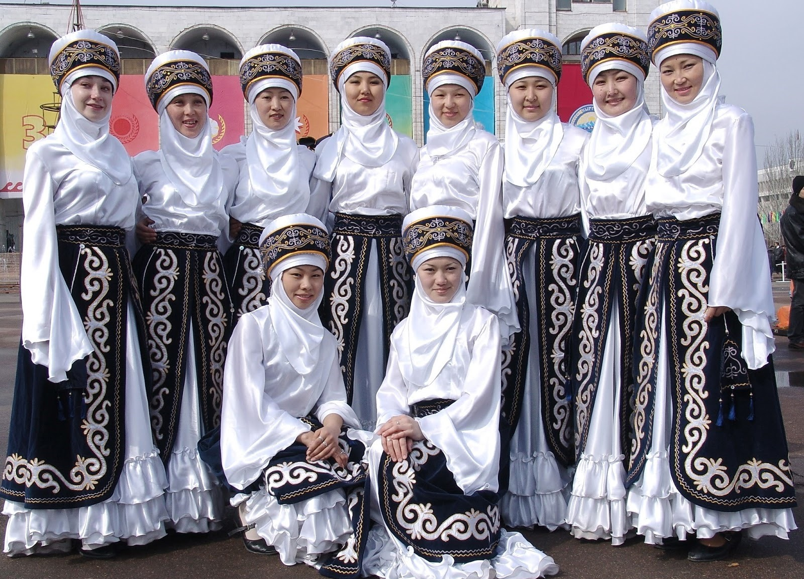
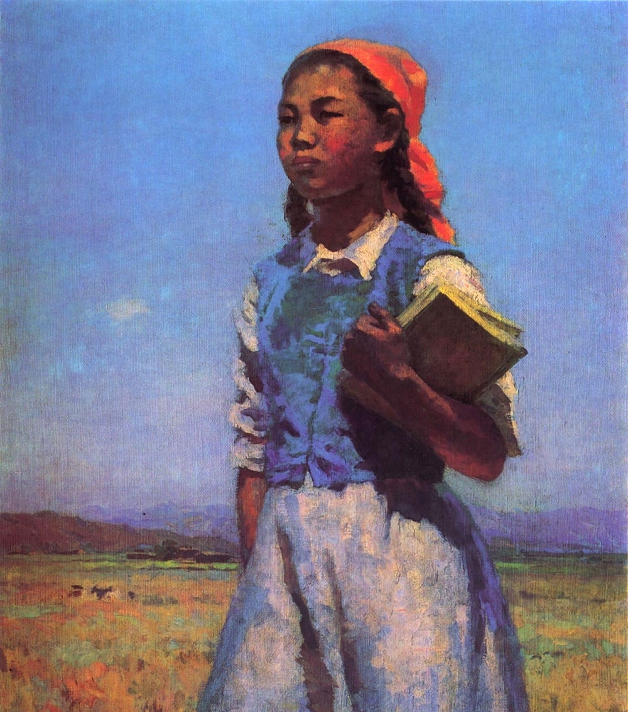
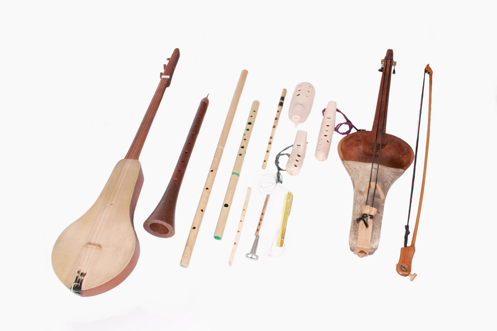
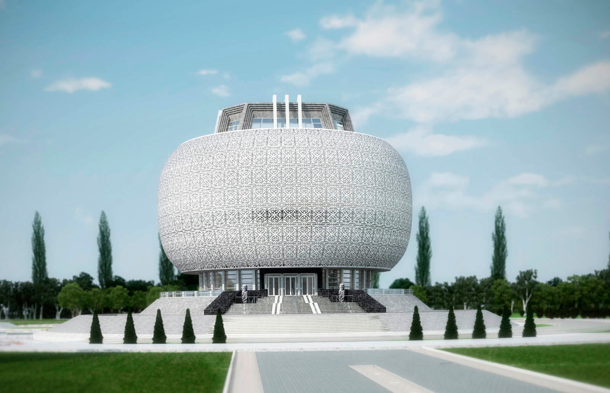
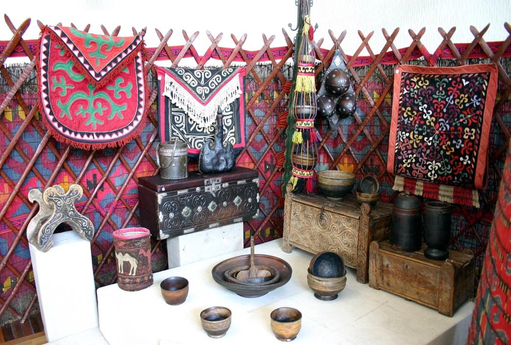
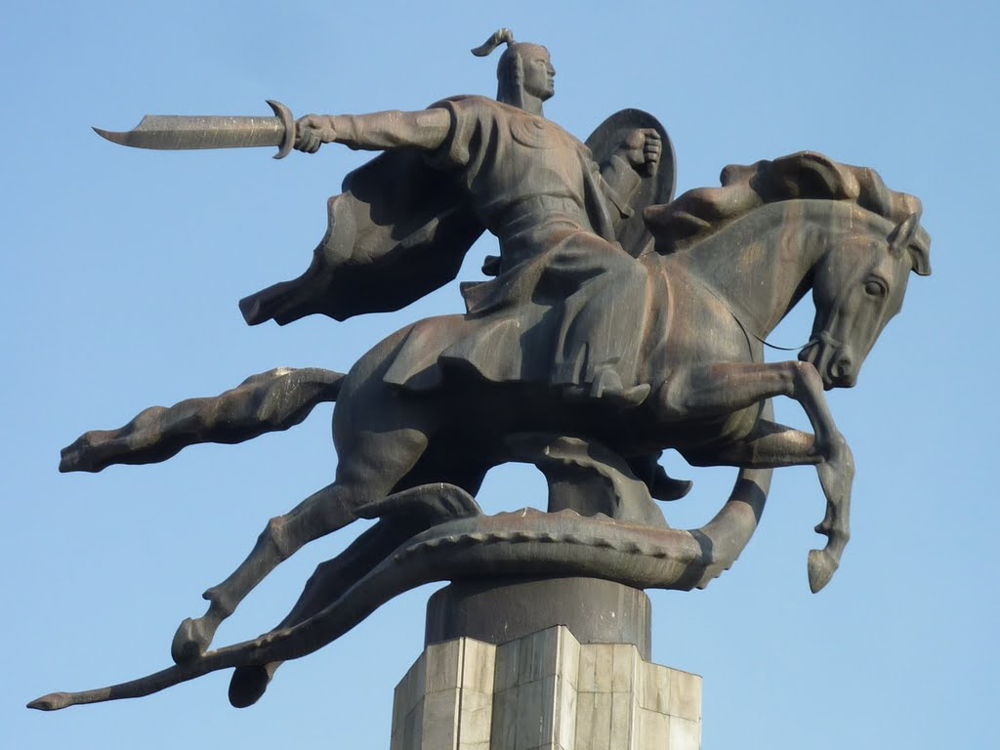
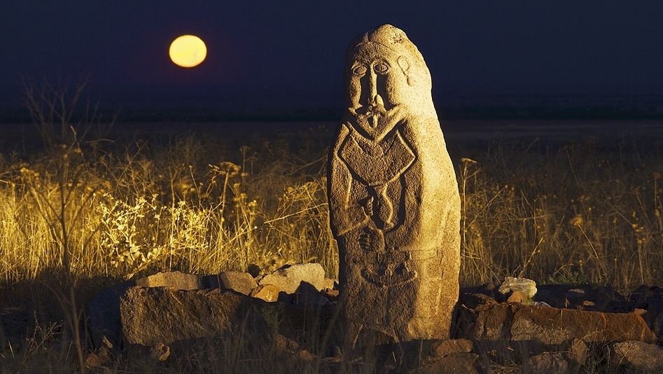

Национальная одежда
Культура Кыргызстана ярко выражается в костюмах. Традиционная одежда киргизов претерпела множество изменений за время своего развития. Как и в других сторонах материальной культуры, в киргизской одежде отчетливо проступают особенности, которые в прошлом были свойственны отдельным племенным и территориальным группам, также её отличают своеобразные черты, характерные для одежды кочевников. В широком употреблении была одежда, сшитая из грубой шерстяной ткани домашнего производства, изготовлявшейся из шкур, войлока и кожи домашних и диких животных.
Традиционным в костюме киргизов является войлочная шапка – Ак-калпак (белый колпак), характерная как для костюмов мужчин, так и для женских костюмов. Другим исконно киргизским элементом одежды выступает верхняя войлочная одежда с рукавами – кементай и белые войлочные сапоги. Замужние женщины надевали набедренную юбку – белдемчи, полы которой сходились спереди. Также среди мужчин и женщин был распространён кафтан – чапан, со стоячим воротником. Следует отметить, что среди элементов женского костюма была почти полностью расшитая нитками рубашка – жака и традиционная конусообразная женская шапочка, которую надевали в торжественных случаях. Мужчины носили штаны из выделанной кожи или замши, которые имели несколько названий – чалбар, кандагай, жалгак шим. Самой распространённой обувью у киргизов были сапоги с высокими голенищами и узкими, чуть загнутыми кверху носами.
Изобразительное искусство
Кыргызы являются древним народом Центральной Азии истоки зарождения художественной культуры к-рого уходят в глубину веков. На протяжении своей многовековой истории кыргызы вынуждены были вести самоотверженную борьбу с иноземными и местными поработителями. В этих условиях они сумели не только сохранить свой язык, свою самобытную культуру, но и внести вклад в сокровищницу мировой художественной культуры.
Археологические, этнографические и искусствоведческие исследования свидетельствуют о том, что еще в культуре первобытного общества на территории Кыргызстана сформировались материальные и духовные предпосылки создания изобразительного искусства (комплекс петроглифов урочища Саймалуу-Таш, росписи пещеры Ак-Чункур в бассейне р. Сары-Жаз и др.). В скифское время, а затем в средневековье развитие получила круглая культовая и монументальная скульптура (городища Ак-Бешим, Красная Речка, Кара Булак), металлопластика, декоративная стенопись в храмовом и усадебном зодчестве, расписная керамика, коро- пластика. С распространением ислама, в частности, с его отрицанием возможности восприятия божества в виде зрительного образа, по служившего основанием для преследования идолопоклонства, а позже, запрета на изображение людей и животных, происходил процесс постепенного вытеснения привычных реалистических форм и сюжетов и замена их орнаментально-декоративным искусством. Чарующая красота и сила цветовых сочетаний, гармония красоты, любовь к жизни и окружающей при роде ощущается в дошедших до нас ворсовых и войлочных изделиях, ювелирных украшениях, вышивке, резьбе по дереву, убранстве юрты, и многих др. Они служили той благодатной почвой, на к-рой в течении многих столетий росло и совершенствовалось народное изобрази тельное творчество.
Музыка

Кыргызская народная музыка. С древних времён в народной музыке, сохранившейся не в нотах, а в устной форме, к-рая передавалась из поколения в поколение, воплощено историческое прошлое кыргызского народа: радость, горе, любовь, мужество, стремление к свободе и равенству, отношение к окружающей среде. До нынешнего поколения народная музыка дошла своим жизнеутверждающим пафосом и художественным своеобразием. В народной музыке было широко распространено сольное музицирование. В основном, вокальная музыка («Шырылдаң», «Девичьи игры», «Жарамазан» и др., кроме «Бекбекей») исполнялась одноголосно. Муз. обучение осуществлялось слуховым и зри тельным способами. Народная музыка кыргызского народа близка к европейской по своему мелодизму, ладовым и метроритмическим свойствам. В кыргызской музыке в основном распространены лады мажорного наклонения. Из семиступенчатых диатонических ладов преобладают миксолидийский, ионийский и эолийский.
Музыка кыргызского народа развивалась в тесной взаимосвязи с музыкальной культурой тюркских на родов, с музыкой родственных народностей Сред ней Азии. Древние люди различный вид труда сопровождали под звуковую ритмику. Трудовые песни того времени служили для облегчения тру да, поднятия настроения, в них обращались к богу труда с мольбой о богатом урожае, о бога том приплоде скота.
По понятиям древних людей, волшебные магические слова могут воздействовать на внешний мир, тем самым и изменить его. Это суеверие послужило причиной создания обрядовых и религиозных песен. Обрядовые песни исполняемые при болезнях, шитье одежды, во время охоты, перед сборами на военные действия, во время грозы, жатвы, веянии зерна, молотьбе пшеницы, при желании хорошего приплода и т.д., превратились в традиционные обрядовые. Они исполнялись знахарями, шаманками, бахши, дервишами в речитативной напевной форме.
О муз. культуре кыргызов 9—10 вв. свидетельствует китайская летопись и труды др. авто ров. Например, в летописи Танской династии, осуществляющей свою власть в 618—907 гг. говорится, что кыргызы имели муз. инструменты: чоор (наподобие свирели) и шыңгыратма. В трудах персидского автора Гардизи, жившего в 11 в. даются интересные данные о древней музыкальной культуре кыргызов. Он отмечает, что еже годно музыканты в назначенный день собирались для развлечения, в сопровождении музыки исполнялись различные танцы.
Кыргызское искусство было широко развито. Популярность и благозвучность импровизаторского искусства, широко распространённого среди населения, была высоко оценена Абу Дулафом, автором жившим в 10 в. Кыргызы исполняли дастан в речитативной песенной форме, а лирические части — в форме мелодии. Вокальная и речитативная форма декламации особенно ярко проявилась в исполнении эпоса «Манас», в возникновении его как жанра песни и развитии музыкально-поэтической импровизации. В «Манасе» и в др. дастанах, в историко-этнографических трудах говорится, что муз. инструменты: керней- сурнай, жезнай, чымылдак, чыңыроон, сыбыз- гы (духовые инструменты); ударные инструменты; добул, добулбас, нагыра, дап, чилдирман, жекесан (барабаны, бубны) использовались при военных действиях, встрече уважаемых гостей, на торжествах, поминках.
В труде М. Кашгари «Сборник тюркских наречий» перечислены названия муз. инструментов, например: кобуз, чан, буг, икома, духовой боргун (сделанный из рогов), су-бучу, урма, кую-рук, томурк, товел (добулбас) туч. В труде Ж.Ба- ласагуна «Кутадгу билиг» — «Кут берчү билим» встречаются названия муз. инструментов как кобуз и др. В современной лексике сохранились прежние названия инструментов — комуз, кыл кыяк, чоор, сурнай, керней, добулбас, чопо чоор, жекесан, жылаажын, шылдырак, коңгуроо, асатаяк, доол, чымылдак, зуулдак. Самым древним из них является комуз, к-рый в народном эпосе «Китаби Деде Коркут» (8—9 вв.) называется кобузом. Языковые темир и жыгач ооз комуз встречаются в археологических находках 2 половины 12 в. История музыки кыргызского народа до пред шествующего века не была записана и не исследована. Только после вхождения Кыргызстана в состав России началась запись кыргызской музыки, перекладывание её на ноты и исследование.
Архитектура
Архитектурные памятники в Кыргызстане представляют собой культурно-этнографический комплекс. В стране насчитывается более 5000 археологических и архитектурных памятников. Самые древние из них относятся к эпохе неолита. Например, изображения животных в пещере Ак-Чункур на юге Кыргызстана. Там же, примерно в 4-1 веках до н. э. были возведены городища Кош-Булак, Кара-Дарьинское, Шоробашат и Джаныбазарское, которые относились к системе административных центров древней Ферганы. К ним же относились менее крупные городища Денбулак и Северо-Узгенское.
В 5-10 веках развивалась культура кочевого и оседлого населения. В этот период строились крепости и замки, разрастались города. На юге Кыргызстана были возведены города Ош и Узген, на севере – городища Ак-Бешим и Краснореченское. В долине реки Чаткал были построены городища Кюлбескан и Чанчаркан. В конце десятого века на территории Тянь-Шаня широко распространился ислам. В это время на территории Караханидского государства появились монументы, мечети, минареты и мавзолеи, которые сочетали в себе типы среднеазиатского зодчества, связанного с исламом. Важным архитектурным наследием этого периода являются башня Бурана и 3 мавзолея в Узгене, относящиеся к 11 веку, а также мавзолей Шах-Фазиль, построенный примерно в 12 веке.
После нашествия татаро-монгольского ига многие города пришли в упадок. Из архитекруных построек 13-14 веков сохранился купольный гюмбез (мавзолей) Манаса, и руины караван-сарая Таш-Рабат. Самые крупные исторические памятники, сохранившиеся на территории Кыргызстана и имеющие историческое значение – это Ак Бешимское и Краснореченское городища, башня «Бурана», городище Кошой-Горгон, гумбез Манаса, Кара-Дарьинское городище, караван-сарай «Таш-Рабат», Кен-Кольский могильник, Курментинский пещерный комплекс, Ош, Узген, Шоробашат.
Декоративно-прикладное творчество
Киргизское декоративно-прикладное искусство рождено многовековой историей народа. Оно неразрывно связано с потребностями и вкусами киргизов, в прошлом кочевников. Общение с первозданной природой с ее заснеженными горными вершинами, бурными реками, оазисами и высокогорными долинами сформировало характер и тонкий художественный вкус киргизского народа. Стремление к красоте вызвало к жизни различные виды декоративно-прикладного искусства - образцы народной фантазии и совершенства художественного видения. Орнамент и цвет являются основными средствами художественного выражения. Орнамент украшает все предметы, окружающие кыргыза с момента рождения и до ухода из жизни. Для киргизского орнамента характерна богатая образность, лаконичность, простота и строгость художественных форм и смысловая многозначность элементов. Многообразные орнаментальные композиции (роговидные, растительные, геометрические) имеют реалистическую основу и непосредственную связь человека с окружающей средой.
В народном сознании прикладное искусство неотделимо от быта, оно обусловлено не только практическими потребностями, но и духовными запросами. Традиционными видами декоративно-прикладного искусства издревле является изготовление узорных войлочных ковров разных типов и предметов домашнего обихода из орнаментированного войлока. Это плетение узорных циновок из степного растения чия, обмотанного разноцветными шерстяными нитями. Узорное ткачество -ворсовое и безворсовое. Вышивка по коже, войлоку, шерстяной, шелковой и хлопчатобумажной ткани. Курак - создание орнаментальных композиций из разноцветных мелких фрагментов ткани. Изготовление узорных изделий из кожи. Резьба по дереву. Художественная обработка металлов. Ручное плетение из шерсти и шелка поясков, тесьмы, бахромы, кружев. Каждый вид изделия имеет свой особый орнамент.
Скульптура
Начало комплектования коллекции скульптуры относится к концу 30-х годов. В настоящее время собрание скульптуры насчитывает 967 единиц хранения. В арсенале фонда представлены все виды и жанры станковой скульптуры, проекты монументальных памятников, медальерное искусство.
Музей располагает ценной коллекцией произведений крупных русских мастеров, работавших во второй половине XIX и в XX столетии. Это такие имена как Е.Лансере, А.Голубкина, С.Коненков, И.Гинцбург, М.Врубель, В.Мухина. В формировании советского раздела, насчитывающего более ста авторов, существенную помощь музею оказали Всесоюзное производственно-художественное объединение им.Е.Вучетича, выставочные фонды Министерства культуры СССР и Союза художников СССР. Единичные произведения Ф.Абдурахманова, А.Амбразюнаса, В.Бородая, Л.Лангинена, Д.Джумадурды, И.Очиаури и других известных художников,- иллюстрируют своеобразие многонационального искусства бывшего Советского Союза.
Благодаря работе фондово-закупочной комиссии музея спектр советской скульптуры был расширен. В 50-60 годы у С.Коненкова было приобретено 9 произведений, созданных за рубежом и в Советском Союзе. В том числе – «Лесовик», «Космос», отмеченные печатью народного мировоззрения художника, навеянный дыханием Эллады портрет «Спортсменки» и другие. Позже, фонды пополнились произведениями московских скульпторов: Е.Белашовой, Ю.Чернова, Д.Тугаринова, анималиста А.Марца, казахского скульптора Е.Мергенова. Поддержку музея окапзали также дары художников. Наиболее ценные из них – «Портрет Н.Рериха» А.Буковского и мраморная композиция С.Казаряна «Сон».
Самый содержательный раздел собрания – кыргызская скульптура, которая дает обзор развития и качественного состояния национального пластического искусства со времени появления в республике первых скульпторов. Основной источник комплектования раздела – многочисленные выставки. Большая часть работ вошла в состав собрания через Государственную закупочную комиссию Министерства культуры Киргизской ССР. В музее хранятся 8 портретов и рельеф «Стахановский забой» венгерского эмигранта Л.Месароша, стоявшего у истоков зарождения скульптуры в Кыргызстане, и основавшего первую в Средней Азии скульптурную студию. С монографической полнотой собрано в отделе обширное творческое наследие О.Мануиловой, которая утвердила скульптуру, как вид изобразительного искусства и своим энтузиазмом дала новый импульс для ее развития в Кыргызстане.
Свой след в пластике оставил крупнейший живописец Кыргызстана Г.Айтиев. Портреты выдающихся людей республики – акына Токтогула.Сатылганова, поэта Аалы Токомбаева, сказителя народного эпоса «Манас» Саякбая Каралаева и др.- демонстрируют еще одну грань его таланта. Художественные концепции 40-50-х годов отражают портреты и жанровые композиции Г.Арапова, В.Пузыревского, К.Кошкина, О.Миньковой, Н.Лодягина, Г.Тупого, — приезжих скульпторов, работавших в республике в этот период. Систематическое поступление произведений в отдел скульптуры началось в конце 50-х начале 60-х годов. В кыргызское искусство вошло новое поколение художников с фундаментальной профессиональной подготовкой. Одним из первых в этой интернациональной плеяде был А.Мухутдинов, станковые произведения, которого собраны в музее почти в полном объеме.
Представительна по количеству и многообразна по составу скульптора Т.Садыкова- лидера национальной пластической школы, видного общественного деятеля, удостоенного высокого звания Кыргыз Эл Баатыры (Народный герой). Галерея богата лаконичными, основанными на реализме произведениями В.Шестопала и артистичной, оригинальной пластикой З.Хабибулина. Работы монументалистов С.Бакашева, В.Димова, А.Каменского, А.Воронина и скульптора Д.Хеидзе внесли в отдел эстетическое, стилистическое и жанровое разнообразие. В 60-80-е годы были приобретены также работы художников прикладников: Э.Кылычбекова, Э.Токтогонова, Ш.Аманкулова. Их характеризует фантастический вымысел, полифоничность, декоративность. Раздел медальерного искусства (художественные и памятные медали, плакеты, сюжетно-тематические серии) представляют В.Копотев и А.Соловьев.
В Кыргызской скульптуре второй половины XX столетия и в начале нового века получили развитие все художественные тенденции, присущие современной мировой пластике (от реализма до авангардных течений). За последние десятилетия музей обогатился уникальными произведениями таких творческих индивидуальностей как В.Зухин, Д.Жолчуев, А.Шаршекеев, С.Ажиев, А.Кожегулов, Т.Медеров, М.Огобаев, М.Джумалиев, А.Турумбеков и других талантливых художников, определяющих современный уровень кыргызской скульптуры.